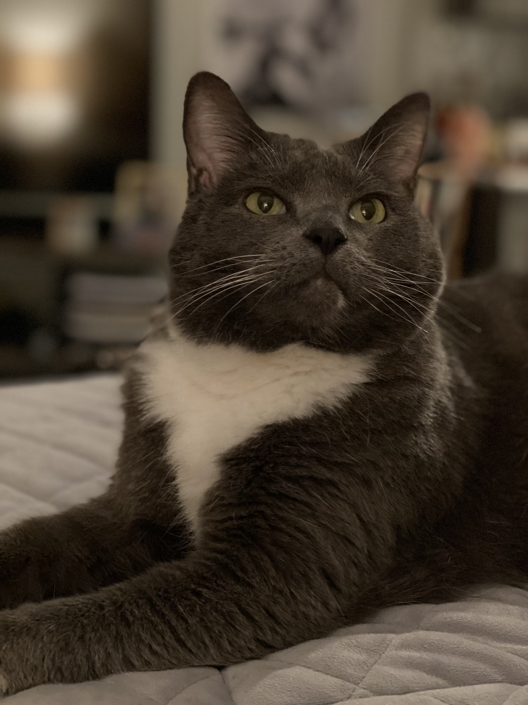

Mr. Rudy
I am an eleventh year Doctoral Cat-idate working with Ward Reesman. I am interested in research at the intersection of petting and napping, with a particular focus in belly rubs, pieces of string, and food. Through my training with Ward, I have developed specialized skills in opening doors and burrowing under blankets. I look forward to starting as a summer research assistant at the John E. Walker Department of Economics at Clemson University studying apartment escape methodology.
I am available for pets and scratches during the 2023-2024 job market.